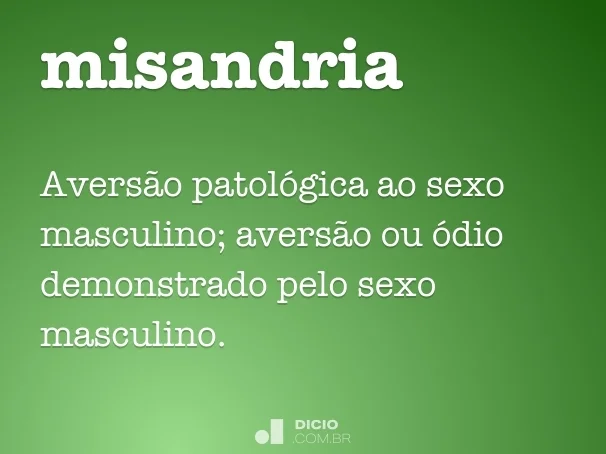
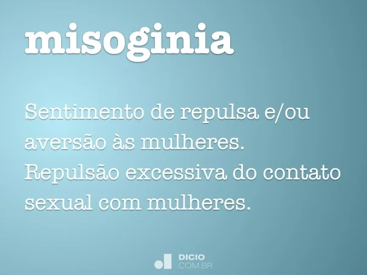

Drag and Drop


********* é a repulsa, desprezo ou ódio contra o sexo masculino. Esta é uma forma de aversão patológica aos homens, enquanto gênero sexual, sendo considerada o oposto da misoginia, que é o sentimento de repulsa e ódio pelo sexo feminino.
********* é uma palavra que tem por definição o ódio às mulheres. Esse conceito abarca os sentimentos de desprezo, preconceito, repulsa e aversão às mulheres e ao que remete ao feminino.